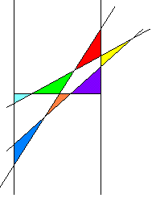

Lösung Puzzle 27: Das H-Problem
Nachdem wir früher gedacht haben, dass es keine Situation mit sieben Dreiecken gibt, hat uns ein Leser doch eine Lösung präsentiert:
 Erweiterung Fall 1.2.
Im folgenden die Überlegungen von Walter Burgherr zur Erläuterung des Problems: Systematisches Abzählen:
Zuerst werden zu den beiden Parallelen des H drei Geraden hinzugenommen. Dann erst wird der Querbalken des H günstig eingepasst.
Der Querbalken kann auch schräg eingepasst werden; durch eine Affinität lässt sich die Figur mit H herstellen
ohne dass Dreiecke verloren gehen. Der Querbalken kann Vierecke in zwei Dreiecke zerlegen oder zwei Dreiecke mit
zusammenfallender Spitze in vier Dreiecke zerlegen, sowie unendliche Gebiete zerlegen.
Schauen Sie sich auch die entsprechenden Figuren an. Dort ist jeweils
eine optimale Position des Querbalkens eingezeichnet.
Durch Klick auf die Ziffern des jeweiligen Falles erscheint auch die dazugehörige H-Figur mit den gefärbten Dreiecken.
{kind=link}
| Dreiecke | Vierecke | Flächen ausserhalb | max. Anzahl | |
| vor Einpassen des Querbalkens | Dreiecke | |||
| 1. Die drei Geraden bilden ein Dreieck | ||||
| 1.1 Alle Ecken liegen zwischen den Parallelen | 3 | 2 | 6 | |
| 1.2 Eine Ecke liegt ausserhalb der Parallelen | 3 | 2 | 1 | 6 oder 7 |
| 1.3 Zwei Ecken liegen ausserhalb | ||||
| 1.3.1 ... auf derselben Seite | 3 | 1 | 2 | 5 |
| 1.3.2 ... auf verschiedenen Seiten | 4 | 1 | 2 | 6 |
| 1.4 Alle Ecken liegen ausserhalb | ||||
| 1.4.1 ... auf derselben Seite | 2 | 3 | 3 | 4 |
| 1.4.2 ... auf verschiedenen Seiten | 2 | 2 | 3 | 4 |
| 1.5 Eine Ecke liegt auf einer Parallelen | ||||
| 1.5.1 ... die beiden andern dazwischen | 3 | 1 | 6 | |
| 1.5.2 ... eine innerhalb, eine ausserhalb | 3 | 1 | 1 | 6 |
| 1.5.3 ... beide aussen auf der entfernteren Seite | 2 | 1 | 2 | 4 |
| 1.5.4 ... beide aussen auf der nähern Seite | 3 | 1 | 2 | 5 |
| 1.5.5 ... beide aussen auf verschiedenen Seiten | 3 | 1 | 2 | 5 |
| 1.6 Zwei Ecken liegen auf den Parallelen | ||||
| 1.6.1 ... die dritte innerhalb | 3 | 5 | ||
| 1.6.2 ... die dritte ausserhalb | 2 | 1 | 5 | |
| 2. Die drei Geraden haben einen Schnittpunkt | ||||
| 2.1 Der Schnittpunkt liegt zwischen den Parallelen | 4 | 6 | ||
| 2.2 Der Schnittpunkt liegt ausserhalb | 2 | 2 | 2 | 4 |
| 2.3 Der Schnittpunkt liegt auf einer der Parallelen | 2 | 4 | ||
| 3. Unter den drei Geraden sind Parallelen | ||||
| führt klarerweise nicht zur max. Anzahl Dreiecke | ||||
{kind=link}
{kind=link}
{kind=link}
{kind=link}
{kind=link}
{kind=link}
{kind=link}
{kind=link}
{kind=link}
{kind=link}
{kind=link}
{kind=link}
{kind=link}
{kind=link}
{kind=link}
{kind=link}